___ ___ ___ / __|_ _| \ \__ \| || |) | walking gallery |___/___|___/ semester work
room 1: gallery
One example from each main activity across Visual Arts and Media Arts. Each caption links the work to course theory (workshops and readings).
// visual arts
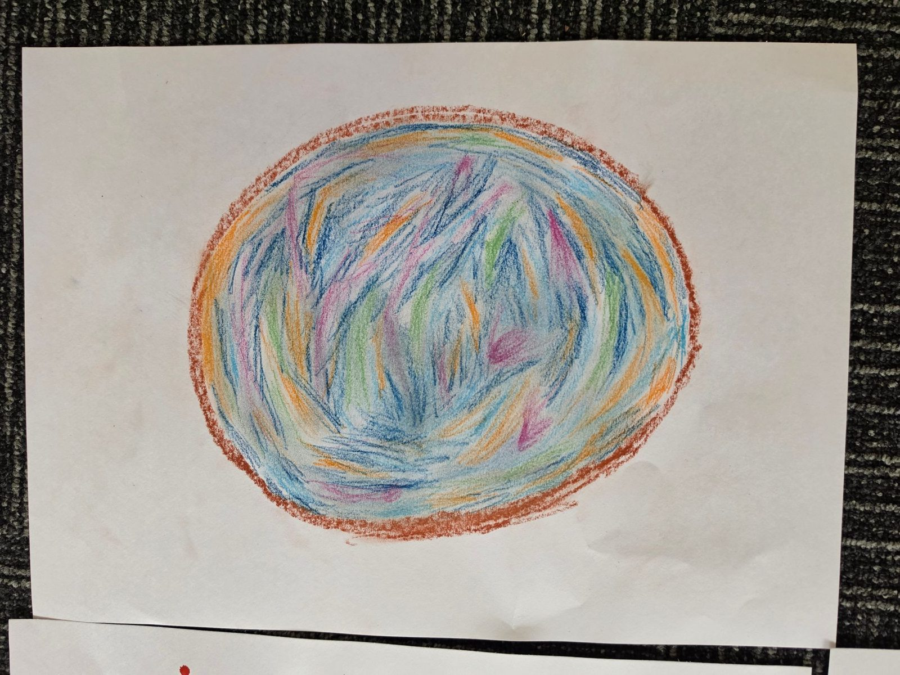
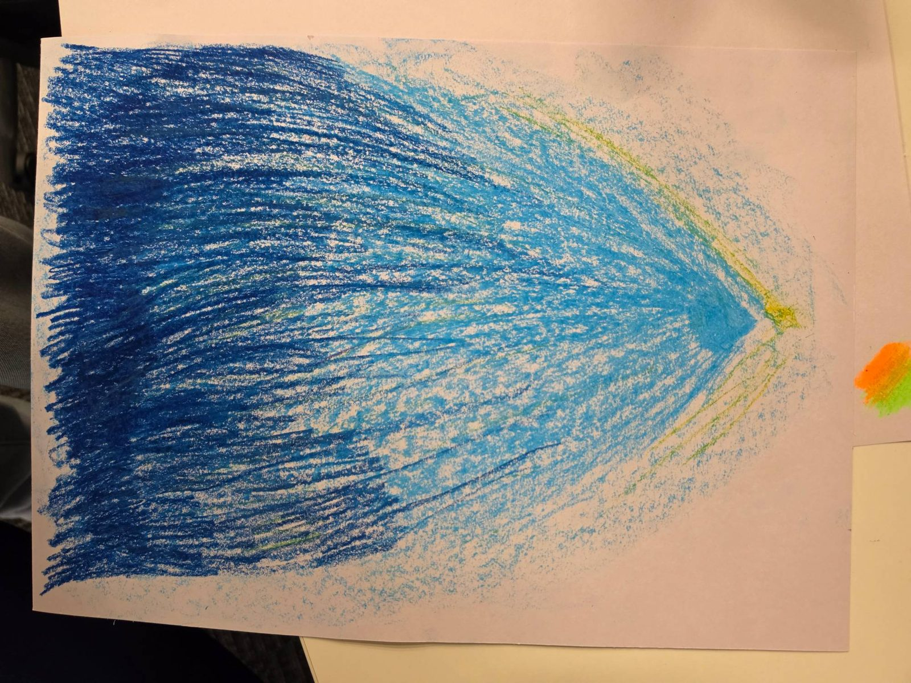
Format and modality: pastel drawings on paper (visual arts, 2D). I listened to music and drew how it made me feel, using colour and line instead of objects. In the first drawing, blue, orange and green swirl around an oval. In the second, deep blue fades into light blue and yellow. [add: the piece of music, and what each colour meant to you]
theory: Dinham (2023, p. 383-384) describes expressionism as using colour, line and distortion to carry emotion, and lists drawing or painting a response to music as a classroom starting point. I would use this with students who find it hard to talk about feelings, because the drawing lets them show it first.
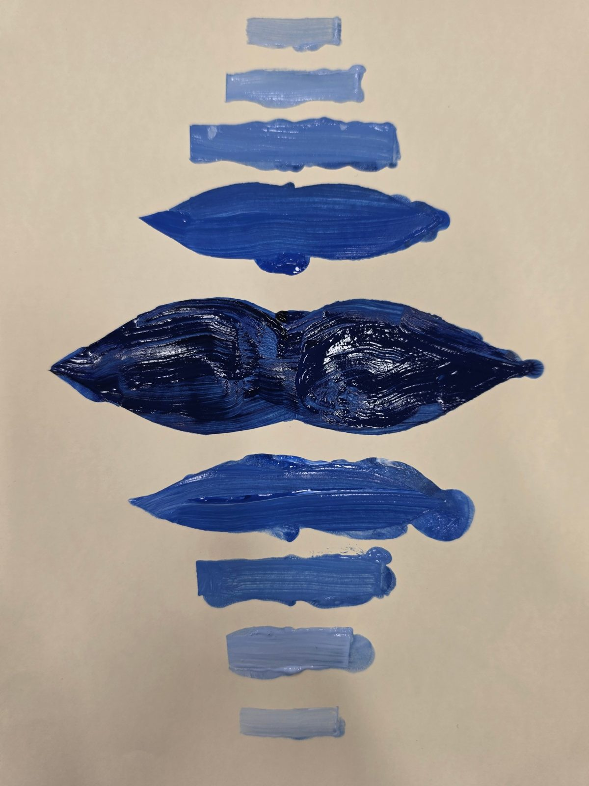
Format and modality: blue paint on paper, arranged symmetrically in strokes from dark to light (visual arts, [printmaking / painting: confirm]). [add: the technique and tools you used, and how the idea came about]
theory: The pattern lesson in Dinham (2023, p. 177-180) varies tools and processes, such as rubbings, printing and painting, and builds pattern from repeated shapes and lines. My piece uses repetition and symmetry in the same way. For Topic 2, Smilan (2017) and Dinham (p. 50) both warn against copying a style without learning the artist and culture behind it, so I would teach the context first.
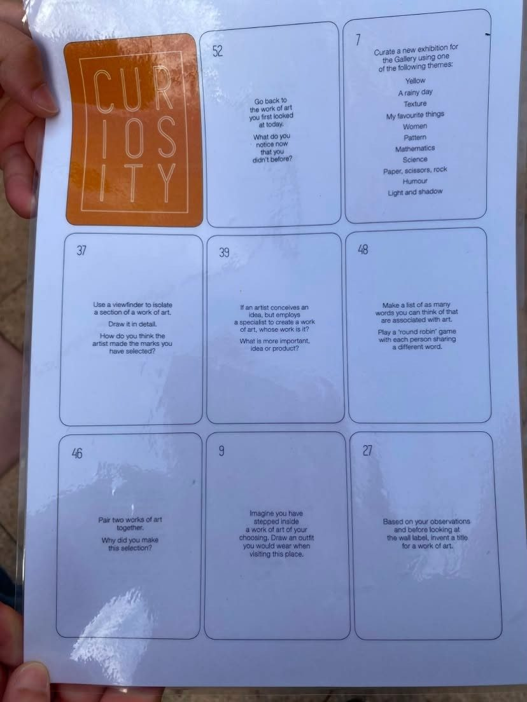
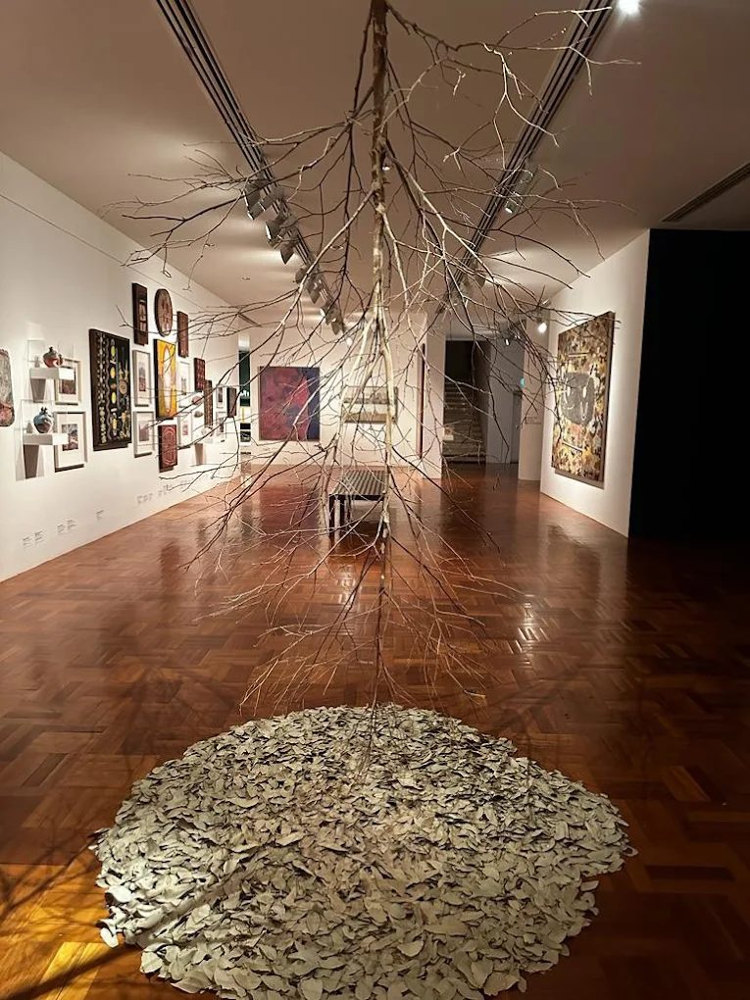
Format and modality: a gallery visit (visual arts, responding). The first image is a laminated sheet of Curiosity prompt cards for looking at art. The second is an installation of an upside-down tree over a pile of ceramic leaves. [add: the gallery, the artist, and what you noticed]
theory: Dinham (2023, p. 126 and 392) describes guided viewing as a series of questions that move from describing the work, to its formal qualities and context, to a personal response and a judgement. The prompt cards work the same way. I would also always give students the artist's name, the title and some context (p. 389).
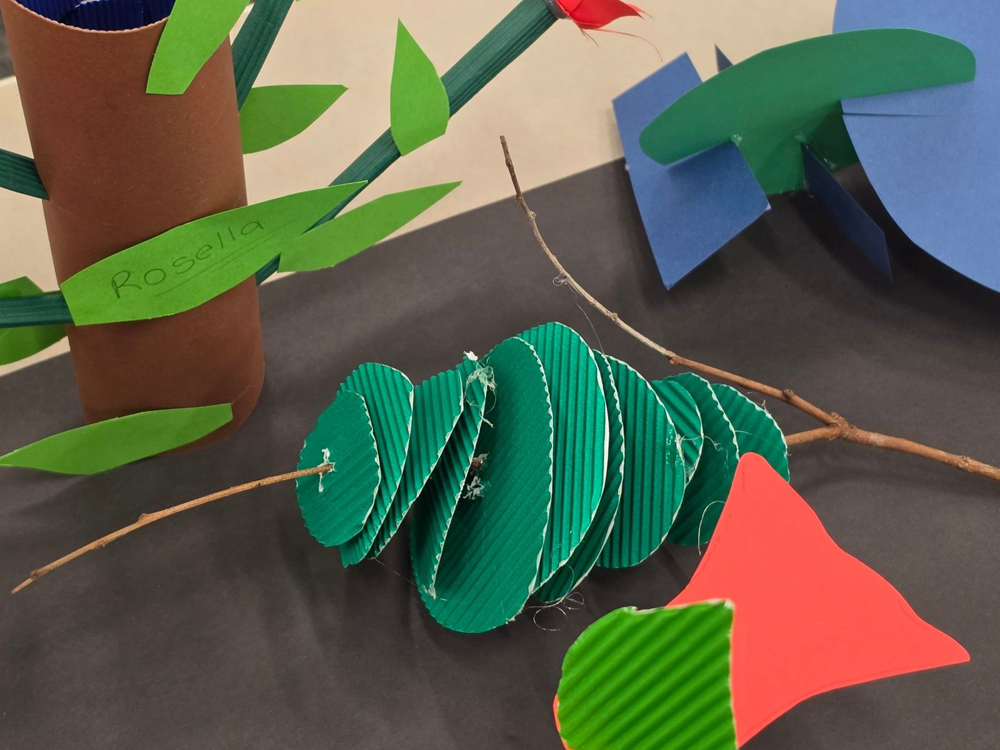
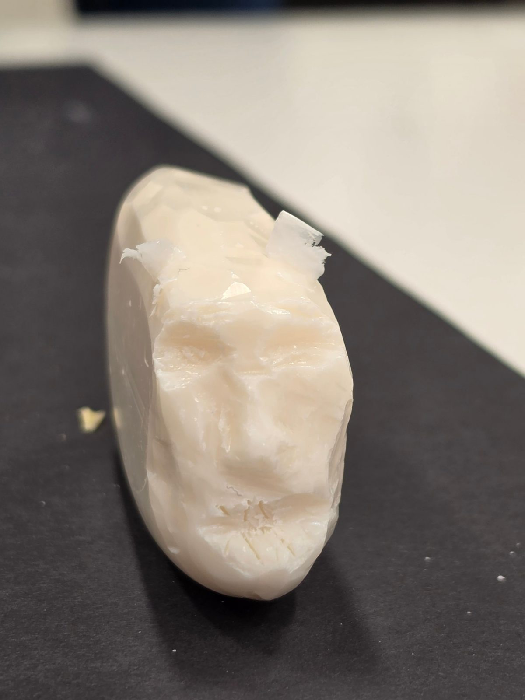
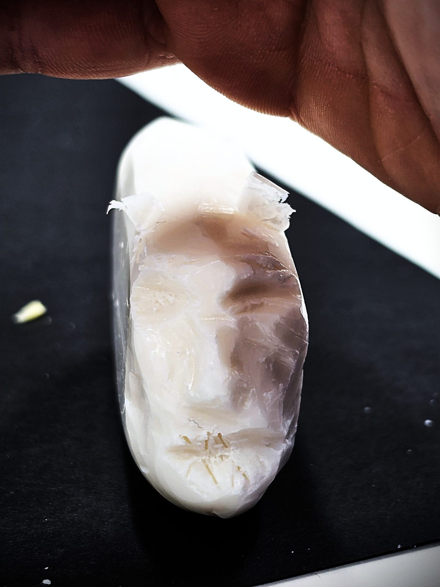
Format and modality: sculpture in cardboard, paper and soap (visual arts, 3D). The cardboard piece has green corrugated discs on a twig next to a paper tree. The soap piece is a face carved into a bar and lit from behind. [add: how each idea came about, and the tools you used]
theory: Dinham (2023, p. 387-388) says working in 3D invites students to explore space and form, using cheap, low-tech materials such as cardboard and found objects. It also says materials carry meaning (p. 386). In class I would use recycled cardboard and ask students why they chose their material.
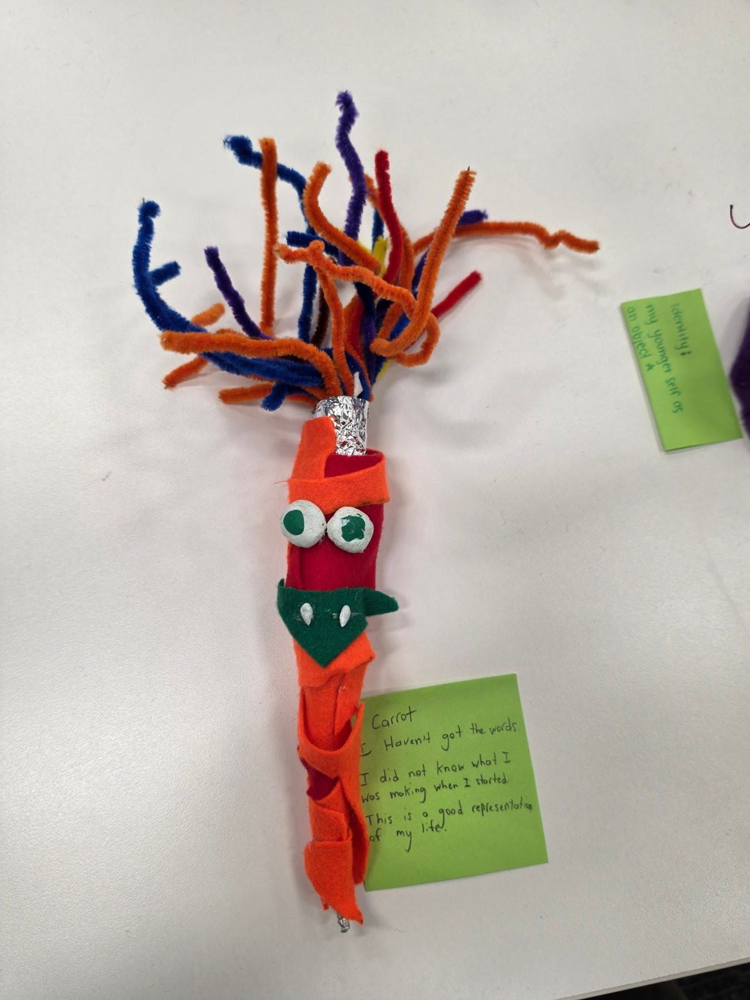
Format and modality: a figure made from felt, pipe cleaner and clay, in the shape of a carrot, with a note that says "I haven't got the words" (visual arts, mixed-media 3D). [add: what the carrot, each material and the note stand for]
theory: Dinham (2023, p. 89) says the arts let students explore who they are by building a personal representation from significant images and objects. Metaphor lets students approach personal ideas indirectly and safely (p. 103-104). Vahter (2012) says an art classroom should balance making with responding, so I would end this task with students explaining what their object stands for.
// media arts
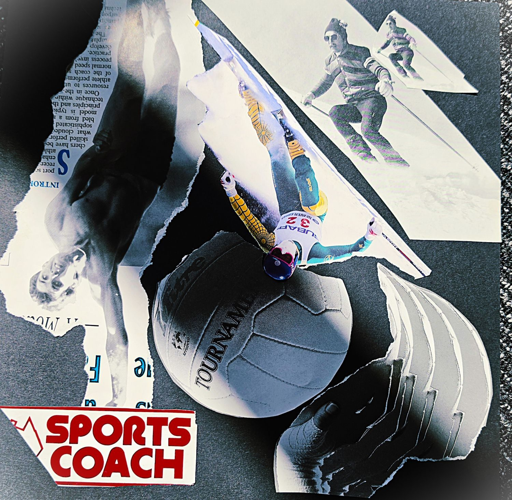
Format and modality: paper collage on dark card (media arts, print media). It is black and white with one red cut-out title, SPORTS COACH. I used a skier, a volleyball and torn newsprint. The red title is the only colour, so it is the first thing a viewer reads. The Media Arts artefact page breaks this piece down in full.
theory: Dinham (2023, p. 308 and 310) lists alignment, repetition and consistency, balance, unity, contrast and white space as the principles of layout, and says a cover should signal what is inside through its image, colour and layout.
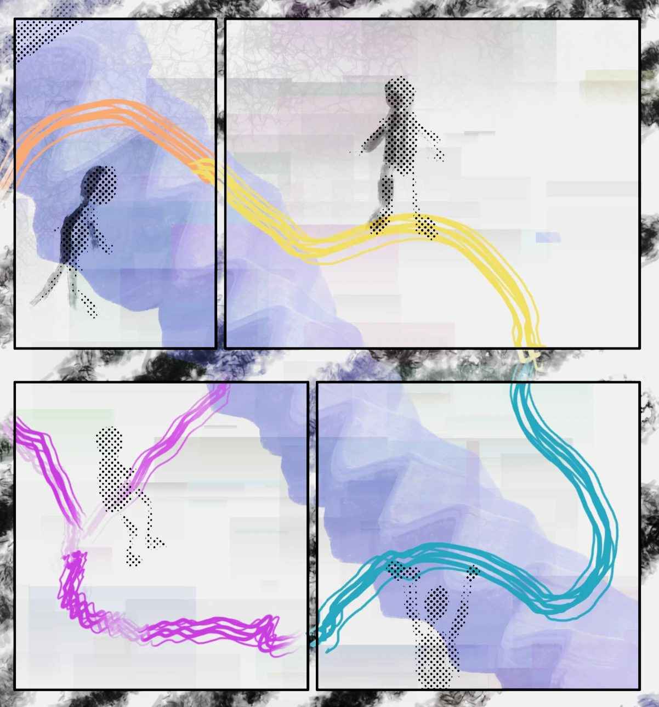
Format and modality: a four-panel comic (media arts, pictorial story). The figures are dots and the path is shown as coloured ribbons. [add: what the story is about, and why you used dots and ribbons instead of drawn characters]
theory: Dinham (2023, p. 297-298) says comics have their own codes and conventions, such as word balloons and symbols for emotion, and that the link between image and text builds literacy. My comic uses symbols in place of characters, so the reader has to interpret the meaning.
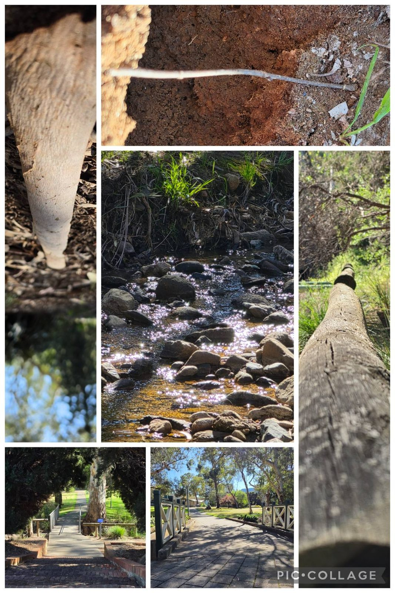
Format and modality: a photo collage from a walk along a creek and a bridge path (media arts, photographic story). [add: which photos you chose as the key images, and why]
theory: Dinham (2023, p. 296) says photographic stories work by choosing what is significant and showing it in the layout, for example by placing the key image in the centre or making it larger than the rest.
Format and modality: two stop-motion videos (media arts, audio-visual). [add: what each video shows, the materials, and how you planned it]
theory: Dinham (2023, p. 302-303) describes stop-motion as a series of still images where the movement advances a small step each frame, so it appears to move when played at speed. It suggests using animation to introduce film conventions and terminology, and a storyboard worksheet to plan the sequence (p. 299).
Format and modality: not made yet (media arts, audio). [plan: the topic, the format (interview, story or radio drama), and who it is for]
theory: Dinham (2023, p. 300-301) says podcasts let students work in teams on scripts and can be used to reflect on a finished arts activity. Copyright-free "podsafe" music avoids copyright problems.
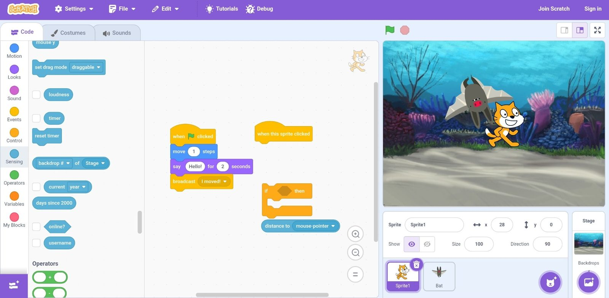
Format and modality: a Scratch project (media arts, interactive). The screenshot shows code blocks and a cat sprite meeting a bat underwater. [add: the objective of your game, and what choices the player makes]
theory: Dinham (2023, p. 311) says every game has an objective and a story, and lists planning questions such as who it is for, the rewards, the risks and the challenges. Interactivity means the player can act on the work (p. 311-312).
// summary
Draft: I believe the arts are learned by making, reflecting, and connecting to other people's work. This semester I moved between visual arts and media arts, and each piece followed the same four steps: invent an idea, make it, connect it to an artist or theory, and reflect on it (Dinham, 2023, p. 39-43). Reflecting on my own art-making also builds metacognition, which means knowing how I learn (p. 106). [edit in your own words, and add what you would teach differently]
add or remove frames so there is one per main activity.
room 2: photovoice
One photo that shows my teaching philosophy and values, with one supporting sentence.
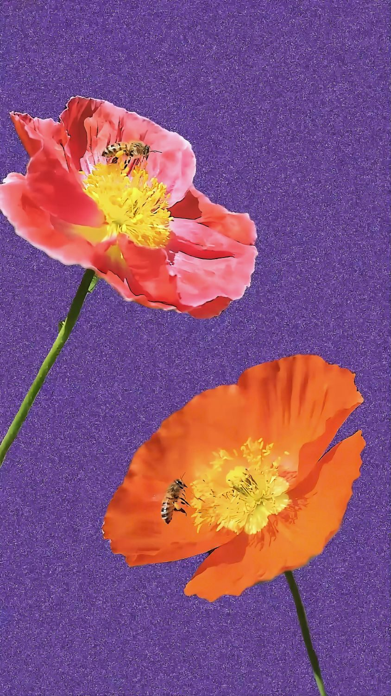
img/photovoice.jpg"Like these two poppies, we each open at our own pace, and just as the bees carry pollen between flowers, we grow more when we share what we know."
room 3: mind-map
A brainstorm of what a Media Arts lesson needs, here an album cover design lesson built on collage. It is not a full lesson plan.
left: what you bring. right: what happens in the lesson. click a node to open it; signals travel along the connections.
// design and layout choices
Draft: The topic sits in the centre of a network, with six branches placed symmetrically around it so the map feels balanced. Every branch node is the same size and the connections are the same weight, which keeps the alignment tidy and shows that each part of the lesson matters equally. Repeating the same node shape and one colour per branch gives consistency and unity, and helps a teacher find a section quickly. Open space (white space) between the nodes lets each idea stand alone, and the lit-up branch gives contrast so the eye knows where to look. These are the same principles the lesson teaches students for cover design. [edit in your own words]
room 4: media arts artefact
Chosen activity: print-media cover design (album cover collage)
click a numbered marker to see how that part of the cover uses a design principle or media arts concept. this is a teacher exemplar for the lesson in the mind-map.
// codes and conventions
- Technical codes: layering and overlap, unusual angle (the upside-down skier), scale (the ball is the largest piece), a limited colour palette, bold sans-serif title.
- Symbolic codes: sports images stand for coaching and movement; the single red title signals importance; the torn edges suggest energy and effort.
- Written codes: the SPORTS COACH title and fragments of real newsprint text.
- Conventions: a square cover format, the title placed where it can be read first, and a main image that tells the audience the genre. [add: how a real album cover would also show an artist name]
// in future teaching
- Curriculum: Australian Curriculum v9, The Arts: Media Arts, Years 5-6 (source: ACARA Media Arts F-6 content document). Exploring and responding AC9AMA6E01 (how media languages and technologies are used across contexts), Developing practices and skills AC9AMA6D01 (production skills to communicate ideas), Creating and making AC9AMA6C01 (making works for specific audiences) and Presenting and performing AC9AMA6P01 (responsible media practice). The cover supports the Year 6 achievement standard: explaining how media languages and technologies are used in works students make or experience.
- Adapting for age and ability: Years 3-4 use AC9AMA4E01 (comparing works made for different purposes and their conventions), AC9AMA4C01 (the curriculum's own example is a collaged zine of images, text and drawings) and AC9AMA4P01 (laying out a print piece with audience in mind). Younger students make a collage and name two things they see; older students annotate the principles and justify choices for a chosen audience. The Canva version supports students who find cutting hard.
- Within a unit: [Draft: before, a lesson on the five media arts concepts and the design principles; after, students compare covers in a gallery walk and write a short reflection. Edit to match your unit.]
- Topics it can cover: Cross-curriculum links: English (audience, purpose, multimodal texts) and Digital Technologies (Canva), which ACARA groups with Media Arts under "media consumers and creators". Optional AC9AMA6E02 case study of a cover by a First Nations artist, with cultural protocols (links to Topic 2). Other themes: identity, culture, the sport or music a student chooses.
the sample paragraph in the video shows roughly how much to write.